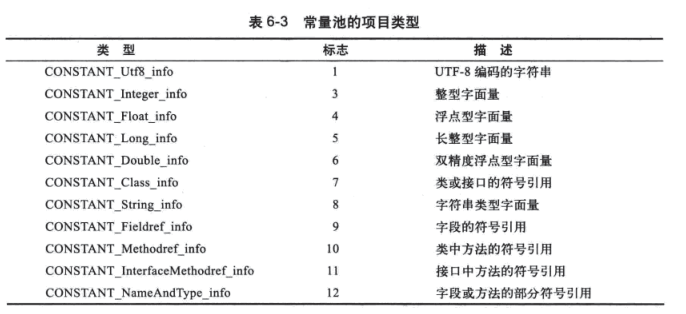

深入理解Java虚拟机（一）类文件结构（上）
代码编译的结果从本地机器码转变为字节码，是存储格式发展的一小步，却是编程语言发展的一大步。
周志明著《深入理解Java虚拟机》看过好几遍了，每次看都会有新的收获（其实就是之前看的不够仔细），所以想写文章记录一下重点，没错，就是划重点。
概述及无关性
Java在刚诞生时曾经提出一个著名的口号“Write Once, Run Anywhere”，这句话充分表达了软件开发人员对冲破平台限制的渴求。与平台无关的理想最终实现在操作系统的应用层上，Sun公司及其他虚拟机提供商发布了许多可以运行在不同平台上的虚拟机，这些虚拟机都可以载入和执行同一种和平台无关的字节码，从而实现，一次编写，到处运行。
各种不同平台的虚拟机都统一使用的程序存储格式——字节码（.class文件），是平台无关性的基石。
Class类文件结构
Class文件是一组以8位字节为基础单位的二进制流，各个数据项目严格按照顺序紧凑地排列在Class文件之中，中间没有分隔符，没有空隙，Class文件中所有的数据都是程序运行的必要数据。当需要占用8位字节以上空间的数据项时，则会按照高位在前的方式分割成若干个8位字节进行存储
Class文件结构只有两种数据类型：无符号数和表。
无符号数属于基本数据类型，以u1、u2、u4、u8分别代表1个、2个、4个、8个字节的无符号数，无符号数可以描述数字、索引引用、数量值或者按照UTF-8编码构成字符串值
表是由多个无符号数或其他表作为数据项构成的符合数据类型，所有表都习惯性以“_info”结尾。表用于描述有层次关系的符合结构数据，整个Class文件本身就是一张表。
魔数与Class文件版本
每个Class文件的头4个字节为魔数，它唯一的作用就是确定这个文件是否为一个能被虚拟机接受的Class文件。
紧接着魔数的4个字节表示Class文件的版本号，其中第5和第6字节是次版本号(Minor Version)，第7和第8字节是主版本号(Major Version)
常量池
紧接着主次版本号之后是常量池的入口，常量池是Class文件中与其他项目关联最多的数据类型，也是占用Class文件空间最大的项目之一。
由于常量池的数量不是固定的，所以我们需要在常量池的入口放一项u2类型的数据，代表常量池的容量。这个容量计数是从1开始而不是0，而且Class文件中只有常量池的容量计数是从1开始，其他都是从0开始。这个设计的目的在于满足某些指向常量池的索引值的数据在特定情况下需要表达“不引用常量池任何项目”的意思，这种情况下可以把索引值置为0来表示。
常量池中存放两大常量：字面量和符号引用。
字面量指的是文本字符串、被声明为final的常量值。
符号引用是属于编译原理方面的概念，包括三类常量：
- 类和接口的全限定名
- 字段的名称和描述符
- 方法的名称和描述符
由于Java语言是在Class文件加载的时候动态链接，所以Class文件中不会保存各个方法和字段的最终内存布局信息。
常量池每一个常量都是一个表，共有11中不同的表结构数据，但是他们有个共同点就是，表数据的第一个字节u1，代表了这个常量属于哪种常量类型。

对照常量池的项目类型表和每种项目类型的数据结构，按顺序读取Class文件的字节，就可以解读整个Class文件。具体的还是看书吧
访问标志
在常量池结束之后，紧接着的2个字节代表访问标志，这个标志用于识别一些类或接口层次的访问信息，包括：这个Class是类还是接口，是否定义为public，是否定义为abstract，如果是类的话，是否定义为final。access_flags中一共有16个标志位可以使用，当前只定义了8个，没有使用到的标志位要求一律为0。
| 标志名称 | 含义 | 标志值 |
|---|---|---|
| ACC_PUBLIC | 是否位public类型 | 0x0001 |
| ACC_FINAL | 是否被声明为final，只有类可以设置 | 0x0010 |
| ACC_SUPER | 是否允许使用invokespecial字节码指令 | 0x0020 |
| ACC_INTERFACE | 标识这是一个接口 | 0x0200 |
| ACC_ABSTRACT | 对于接口和抽象类，该标志位为真 | 0x0400 |
| ACC_SYNTHETIC | 标识这个类并非用户代码产生 | 0x1000 |
| ACC_ANNOTATION | 标识这是一个注解 | 0x2000 |
| ACC_ENUM | 标识这是一个枚举 | 0x4000 |
根据含义确定标志位是否为真，找到所有为真的标志，标志值求|运算，结果就是access_flags的值
类索引、父类索引和接口索引集合
类索引（this_class）和父类索引（super_class）都是一个u2类型的数据，而接口索引集合是一组u2类型的数据的集合，Class文件中由这三项数据来确定这个类的继承关系。
| 索引类型 | 数据类型 |
|---|---|
| this_class | u2 |
| super_class | u2 |
| interfaces_count | u2 |
| interfaces | u2[interfaces_count] |
假如3个u2类型的数据分别为 0x0001, 0x0002, 0x0000，代表的是，类索引为1，父类索引为2，接口索引集合为空，然后就可以根据索引值，去常量池中找到对应的全限定名。
预知后事如何，且听下回分解